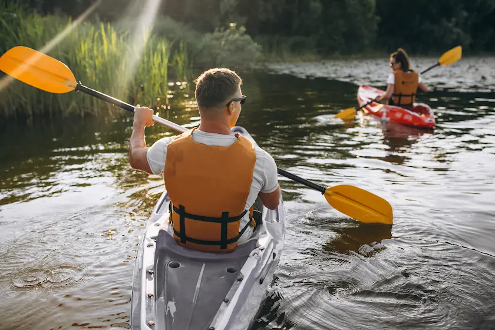
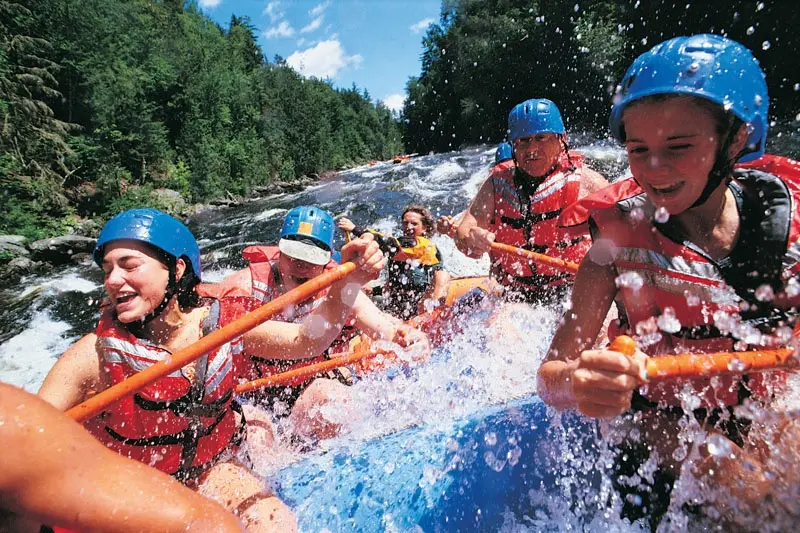

The best Rafting company!

At Dry-Oar Rafting, our purpose is to inspire adventure, teamwork, and a deep connection with nature by guiding people safely through the world's most spectacular river canyons. We believe that stepping away from daily routines and into the rush of whitewater builds confidence, strengthens bonds among family and friends, and fosters a lifelong appreciation for our natural environment. Our mission is to make the thrill of river running accessible to everyone, ensuring that every guest walks away from our trips with a renewed sense of wonder, unforgettable memories, and a profound respect for the wild.
To deliver on that purpose, we offer a diverse range of rafting packages meticulously tailored to accommodate every skill level and thrill factor. Our offerings include relaxing, family-friendly scenic floats perfect for young children, as well as heart-pounding, high-adrenaline Class IV rapids designed for seasoned thrill-seekers. Every adventure we provide comes fully equipped with premium, certified safety gear—including heavy-duty rafts, life jackets, and helmets—and is led by our world-class, swiftwater-rescue-certified guides who handle all the logistics so you can focus entirely on conquering the river.
